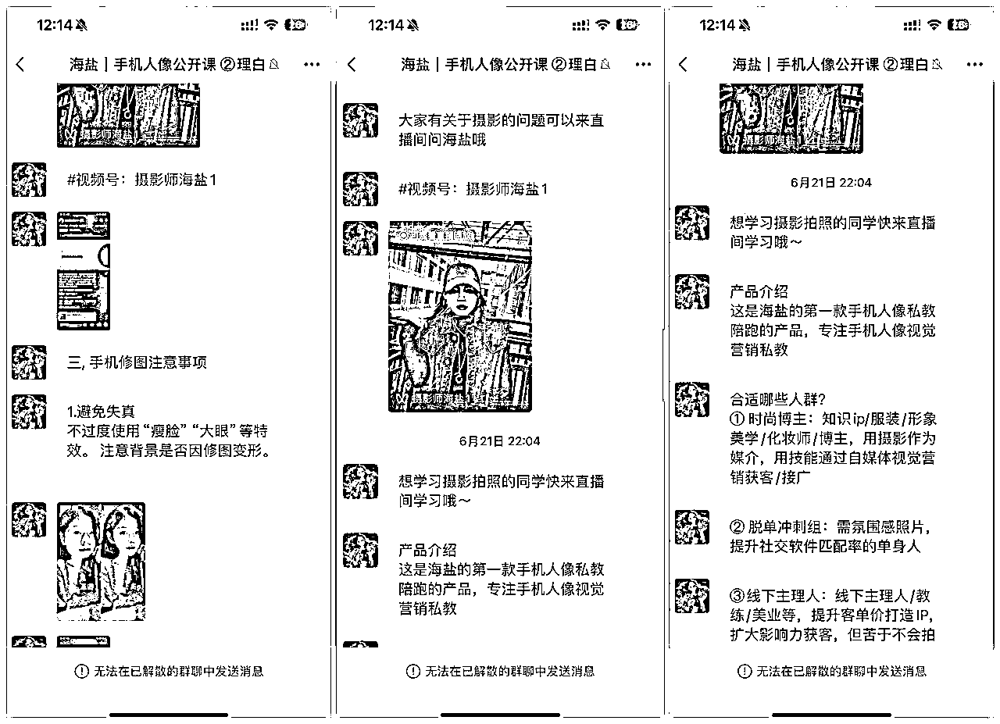
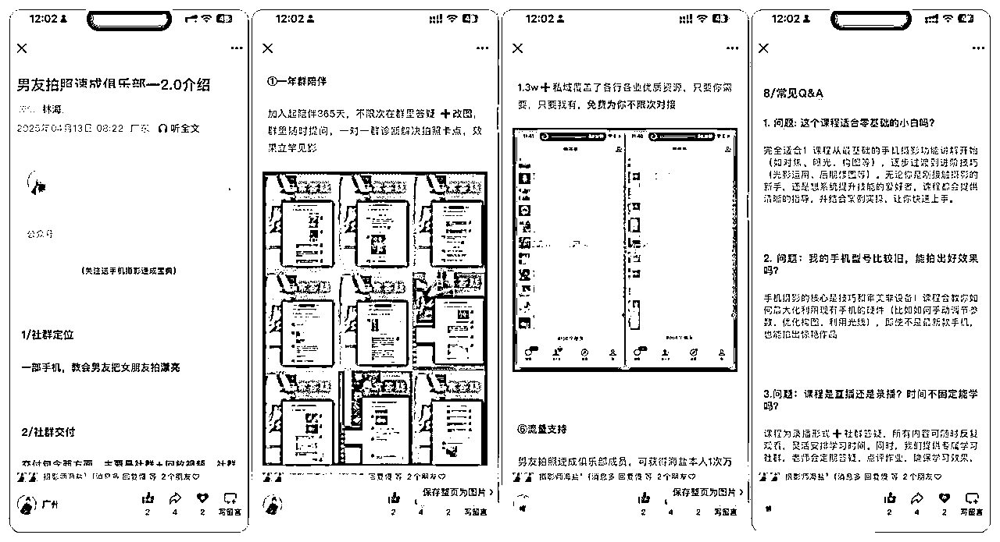
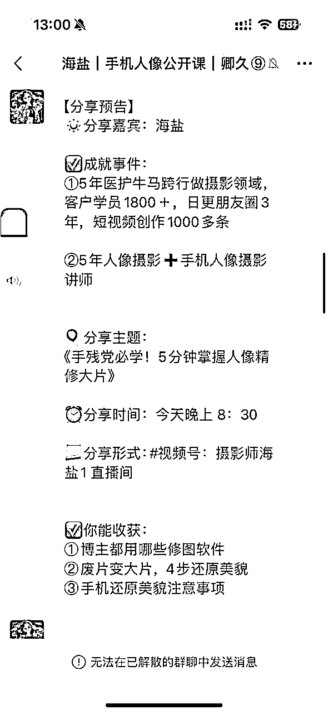
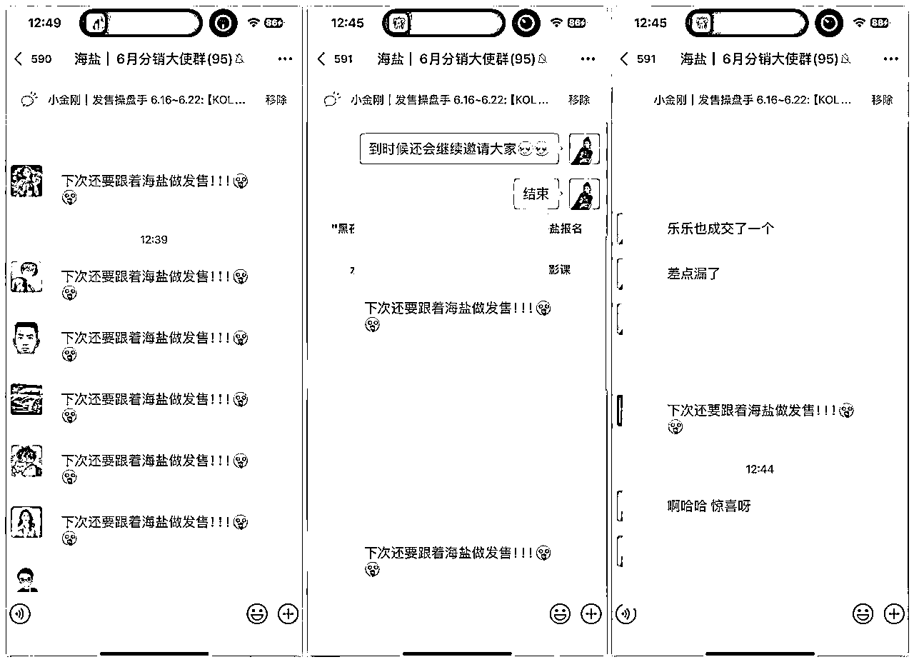
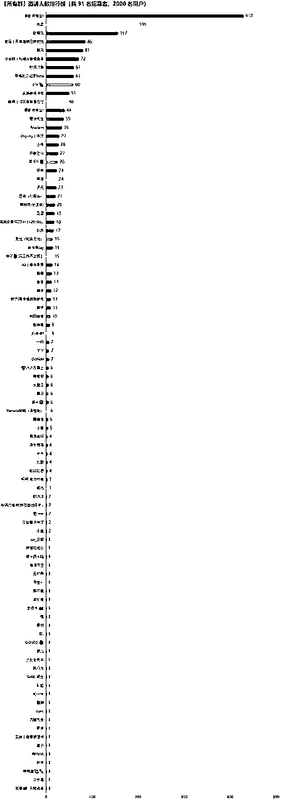

来源：https://dqez6wornz.feishu.cn/docx/GrIFd3atfotulGx2sLXcRSn1nUc
别人的私域就是我们的公域
私域裂变是做自媒体的必备能力，尤其现在公域流量越来越贵的情况！
私域我们做中小ip非常重要的获客和转化的渠道，在这3年，我大概做过30多次大大小小的私域发售活动，私域从1K裂变到如今1.4W多，变现也有几十万，可以说私域发售是IP要获得高变现的必备能力。
这次发售7天引流2000人，加微近600多人，最近一对一咨询，关于发售咨询比较多，所以，我根据自己过往做活动的经验，总结一套可参考的标准发售模板，方便大家去设计自己的私域发售活动。
一套完整的产品发售流程，分为准备期、转化期，追销期三个阶段，围绕不同的发售目标，我们可以进行相关环节的设计。 我以常见的公开课发售为例，给大家设计整套流程，其他类型的发售逻辑，都是一样的
公开课信息参考如下
文字备注：公开课分享主题，主要是围绕大家变现必须有的元素来，通常是：
第一天：个人经历+基础干货和认知
第二天：第四天：干货结合案例
最后一天：围绕风口，交付，整体学习方法来讲
（记得准备一下用户添加你可以领取的资料，准备2-3份，后面课程复盘也需要送福利）
信息报告
里程碑奖励 ➕邀请奖励➕备注说明
备注：
1、私教的分销cps通常在10%-20%，训练营在20%-50%，合伙人在20%-50%，具体多少自己考量
2、里程碑奖励主要是看自己愿意拿出多少成本给大家发福利，符合你的预期就可以，建议提前算好账
备注：什么是KOL，就是有一定私域粉丝量，愿意帮IP做裂变拉新的人，主要任务是在公开课期间，帮助我把用户拉到公开课群。
如何联系，以及联系怎么样的KOL呢，一共有2种情况：
情况一：你跟这位老师或者KOL曾经付费过，或者你帮过他的忙，或者你的圈内好友
话术：
xx，是否能有荣幸邀请你来做我的分销大使呀？
我本月要做【0基础手机人像大片公开课 】产品的发售，卖私教陪跑
计划在xxxx三天集中发售的拉新，这三天您只负责帮拉新，我这边负责成交，成交后分15%，每单佣金是xxx元
另外，这次助力我的小伙伴，#未来举办大事件时我也会同样助力你~
非常期待你来呀，咱们OK吗？[害羞][害羞][害羞]
（发完话术，再发打榜福利海报就行，等回复，答应就打好标签）
情况二：你没有跟这个KOL付费过，但是他有一定影响力，这个时候都策略是：你可以给他一笔前置费用，比如200-1000，具体你要先算个账
话术：
xx ，我这边有一个【手机人像摄影公开课】我准备做一次大规模发售，发售裂变时间是 6月18号-6月20号
一直在xx圈子/社群看你输出内容，觉得您非常优秀，所以想问问您，是否愿意在我这次大事件中，助力我做一次裂变，我这边会给到您xx元红包，作为您这次的感谢费。以及整个发售过程中，文案都是准备好的，您只负责裂变，我们负责成交，成交后会分xx的cps，并且，如果您未来举办大事件发售，我也会同样助力，请问您有兴趣参加吗？
这是我们的打榜安排。
（发完话术，再发一下任务一中做好的打榜福利海报）
（注意，邀请后做好记录，打好标签，公开课拉群前3天拉kol群，不要轻举提前拉群，因为活跃度最高的就是前两天，你拉太久没开始热情和注意力会下降）
一般分享嘉宾是圈内知名人物，比自己势能更高的，可以从自己购买的高客单产品主理人选择，另外一种就是从自己的学员中成绩突出，效果明显的有限选择
时间主题没什么问题的，就可以做海报了。
XX，这边有一个小小的请求想要跟你同步一下，来寻求一下你的帮助和时间，我会在xxx号做一次公开课群发售，届时想要邀请优秀学员来我的公开课做分享。
内容就是关于学习的心得和学习前后的变化，每一个参与的小伙伴，我都会推名片引流（或者直接说给多少红包也行，也可以送实物礼物，看自己）
因为之前你的学习状态特别好，成绩也特别优秀，想邀请你来做一次 分享，你看你是否愿意且是否有时间？特别需要你的支持！
注意：
1、给学员的福利自己设置就可以，不用一定是给稿费，可以是别的形式（好处）
2、找4位学员即可，不用太多
4、学员写完稿子到时候要提前看审稿，写稿的流程一般是这样子
大咖选择的注意事项：
1、没有直播过不要找，太不好操控，实在没有就自己播
2、影响力最大的大咖放在前面，不要想着压轴
3、最好能联系到3-5位大咖这样子（也根据你的实际情况）
这个筛选的方式可以主观的判定为：
在你的直播间讲完之后，别人就会觉得：这个老师讲的真有道理，我要买。
蛊惑人心的能力＞专业能力＞所谓的粉丝量，如果他是一个只有粉丝量，但是不会直播销售，那就让他只负责灌流量就行了，不要让他参与连麦，因为有可能会起到相反的效果。
邀请话术参考：
xx老师你好呀，6月 21号-6月25号，我会准备一场公开课发售，中间会有连麦大咖环节，因为理白老师是我特别仰慕的老师，希望能够邀请您来连麦支持，时间大概是晚上8:30或者9:00开始。
不知道您这段时间是否有时间且愿意来支持呢？（21-25号其中一天就可以），如果xx老师能来支持，我感到非常荣幸，期待xx老师的回复呀~
如果对方同意，这个时候我们补充一下我们连麦的需求：
连麦的话需要xx老师配合的有3件事儿：
1、需要一下xx老师的形象照，我们到时候制作海报
2、需要xx老师的个人标签，到时候我们添加在海报上和给zxx老师做个人介绍的时候用
3、我们连麦主要是围绕摄影和您的赛道相结合，用对谈的形式直播，如果您有想聊的内容，可以跟我们讲，我们围绕您感兴趣的主题给您设置对谈问题，如果没有要求，我们团队小伙伴会根据您的赛道，给您设置主题和问题。
谢谢xxx老师的支持呀！
感谢信任，欢迎各位分销大使加入群，本次公开课奖励如下
✅第一，你需要做什么
正式发售时间为xxxx七天，分别是三个阶段
①xxxxx：裂变期，期间主要要邀请海报+公开群二维码就行
②xxxxxx成交分享期，期间主要是做直播和社群的同步分享，这个阶段主要是海盐给用户做分享来转化已经进公开课群的用户，这个阶段我们会主要在朋友圈发【成交向文案】，也会同步在KOL群分享给大家，大家可以跟着我们一起去发圈，多发就会多触达，多触达就会多多赚。
③xxxx溯源期，成交后结束后，这两天溯源会给大家分钱
大家主要每天做的事，就发你对应在的群生成你的群聊二维码+邀请福利（一定要生成自己的才能溯源成交），群二维码 发朋友圈引导进群
如发售期间有人对海盐的产品感兴趣，你可以直接把人推给海盐，成交后给你分钱
✅第二，你能得到什么
以下分别是发圈奖励+邀请奖励+出单奖励
1-发圈奖励
大家发圈以后完整截图发到群里，每天前10位和每天最后6个发圈奖励1.66红包，不要每条重复哦，我们会提供文案，多几个不同文案进群人会更多，后续加更多给你分钱更多。
助理发红包会优先选原创文案，后续你发圈进群成交的小伙伴还会有额外的提成奖励，发的越多，越有机会成交
产品介绍+海报+分销流程+朋友圈文案等更多信息
可查看文档：(这里放发圈的素材，比如文字 图片 留言啥)再次感谢大家，如果有不清楚的可以群里问
前面三天裂变，一定要疯狂去做这些游戏，我基本是中午下午晚上各做一次，然后各自揭晓一次。
这个动作可以激发人的好胜心，有助于增加裂变效果，同时也让人有参与感和惊喜感。
游戏话术参考：
我们再来玩一个游戏，晚上12点
游戏①
大家猜猜多少人？最接近的一个发红包6.66
游戏②
今日12点更新拉新排名的第13个发6.66红包
【我们核心运营人不算的】
1）分销及奖励安排
发分销海报➕注意事项
2）具体分佣规则：（优先以成交为导向）
优先级1：在谁那里成交算谁的，
比方说A把xx拉进群，但是B去跟xx谈单，问小金刚买不买，小金刚在B那里买了，这个分佣就给B
优先级2：如果是在主创团队这里成交的，就看谁是最早拉人进公开课群的
比方说A拉xx进了1群，B拉xx进了2群，
A拉xx进群时间更早，那佣金就给A
核心工作：每天发三次红包
每天发至少3次（可以中午 下午 晚上各自一次）
建议在私下发，然后助理截图群里就行，不要在群里面发，不然群容易被炸掉，我这次被炸了2个，可能我碰上618比较严格）
欢迎加入【海盐｜手机人像摄影公开课】
#进群须知
❶进群必须添加群主微信，才能领取进群福利
❷6.18号之前属于禁言，但可以邀请朋友一起进群学习
3.若群内偶然出现异常，这里是防走失链接：
《这里放一个飞书链接，里面有主理人的二维码就行了》
#过重要消息
①保持群内得体互动很重要
②保持群内不乱加人，不乱发的边界感很重要，经发现移出群脚，欢迎举报！
#本群建议自己避免错过重要消息
！！！公开课的要点是引导裂变，获取私域，沉淀倒自己的微信上，追求长期转化价值！！！
核心工作：
1/引导新人加海盐微信(1-3天 每隔2h发一次 4-8天 每隔3h发一次)，
一般来说1~2天是进人加人最多的，所以这个时间段一定要频繁的发名片，这样子当天加粉一般都会在两百左右！
话术：
欢迎进群的小伙伴，➕海盐微信免费领取
①社恐万能出片技巧，男女通用！
②拍照脱单宝典
（申请人多 慢慢稍等通过哈）
2/喜报话术：
恭喜xx
加入海盐手机人像摄影私教
核心工作：
公开群答疑助理＋整理爬楼记录(每天整1次）
参考话术：
#爬楼密码：xxx主题（事先要收集聊天记录，嘉宾分享完就收集）
分享预告（晚上分享就当天中午和晚上7点前各自1次，如果中午分享就是早上预告1次就好）
参考话术：
社群同传
主理人在直播间分销和销转的话，要有助理去分发同步社群，这样可以满足不同的人观看习惯也可以反复触达。

注意不能全部是干货，但要干湿结合，同时要不停的同步直播间到群，同时中间也要插两三次广告，这样可以反复触达。
产品介绍流程
大概讲一下合适人群➕解决的问题➕当天下单福利
如果日常有运营公众号的话，公众号销售信安排 至少三篇，
一篇人设文，,一篇产品介绍文，,案例成绩系列推文，有余力还可以发小绿书【关于项目的认知、日常分享】
如果没有运营，可以自己决定要不要发公众号推文
裂器期就主要以发公开课为主，成交期以发成交图 上课图 学员复盘 学员作品 学员反馈 学员痛点 这些围绕

个人IP故事的文章是必须写的，也可以制作十年体类型的短视频，主要目的是让进群人员，可以不限次地快速了解到主理人，加强信任（这次来不及我没写 用以前写的文章）
公开课课件第一种形式是可以从自己过往的付费课件提取部分内容进行分享，第二种形式，可以让自己成绩比较好的学员，进行一个故事干货经验分享，一般是每天晚上是主理人分享，中午的话是学员分享
（主理人最好在公开课开始前准备好讲课稿子和ppt，这样后面重点放在销转和私聊意向用户上，不然做内容很费时间的，容易浪费时间精力 导致没空做转化，也会转化率偏低）
要有详细版本的以及简约版本的，以及公众号介绍，这样大大节省沟通成本，等一下结尾节省详细版本的以及简约版（这次卖私教还没来得及做私教的产品详细介绍文，下次优化）

5.学员的内容准备
如果有些学员不怎么输出，所以你要进提前审稿，让他提前一两天把稿子发给你，你要进行修改，确保我们的内容优质，要给用户提供真正的价值。
写稿子框架参考：
第一部分：自我介绍
第二部分：跟你的故事（怎么认识你，加入你的学习的）
第三部分：加入你学习之后的几点收获（3点至少）
收获里可以包括：比如自己拍照的前后对比图，比如变现的提升，比如自己的一些认知的提高，或者成长维度上
第四部分：号召公开课小伙伴加入你的私教
参考学员稿子链接：
01开群引导：领资料+V，沉淀私域
02预告分享：让用户提前了解内容，制造用户期待和拉场观。

晒单成交：晒购买截图，刺激潜在用户购买欲望。
我觉得这次直播分享最大的好处就是你可以看到你的潜在用户是哪些人，因为他们看你直播，大概率他是有兴趣的，好然后可以针对性的去打标签，针对性的去私聊，尤其是高意向用户，非高意向用户就可以统一的群发，但是高意向的不要群发。
下面看一下我的聊天方式以及备注方式：
非高意向群发方式：
高意向和非高意向的备注标签
意向用户的聊天方式：
针对犹豫用户：
可以发送涨价提醒或针对性挖掘用户需求，解决个性化问题。
如果你有体验课，私教课不好成交的话，先推荐买体验以后再升单也可以。
每天发4-8条发布学员好评、报名盛况截图，强化信任，用户痛点放大
发售结束了要做几件事情
一般结束2天内结账


解散前先把自己的各种福利呀， 钩子啊，给他扔进去，这样子能找更多人加你~之前不解散之后就会等于均为广告群，对用户体验不好，所以这次我就解散了。
再次造势，让别人看到你的实力
1.信任是核心，避免过度营销，用真实案例和专业度打动用户
2.紧迫感设计，限时、限量、专属福利缺一不可
3.闭环思维，从吸引到交付到成交，每个环节都要为下一阶段铺垫
4.付费找kol宣发也是一种增量，如果说你的私域量不够多，不建议找专业人发售，发售本质是存量的提取，它并不能给你带来更多的增量，你想要更多的增量，你要找到小kol去帮你，你可以选择付费或者其他方式都行~
5.作成一件事情，要习惯性把它沉淀下来，比如我这次为啥要写出来选择，总结经验有两个好处
第1个，可以帮自己梳理流程和优化方案，第2个，能够帮助一些需要的人提供一些帮助！
6.群发售涨粉特别快，而且变现价值和信任价值很高！推荐每年做3-5次，这样私域裂变就会超级快了！
7.如果前端的用户基数不够大，建议不要卖太高客单的，因为很难成交，用户决策成本也很高，我这是卖4位数的，卖的不是很好，所以也总结了经验，下次还是卖三位数的，然后4位数的重点去做私聊潜在学员的效果，合适再推荐
以上就是本次发售的分享哦，有帮助可以结尾给海盐点个赞阿！感恩！